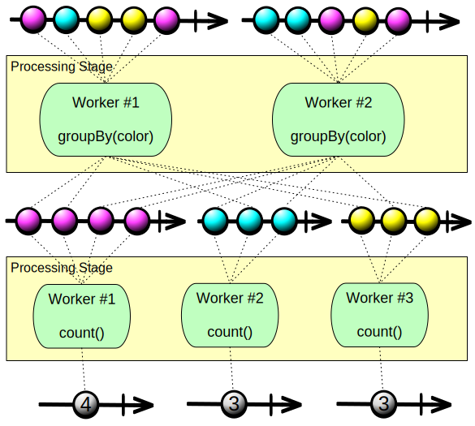
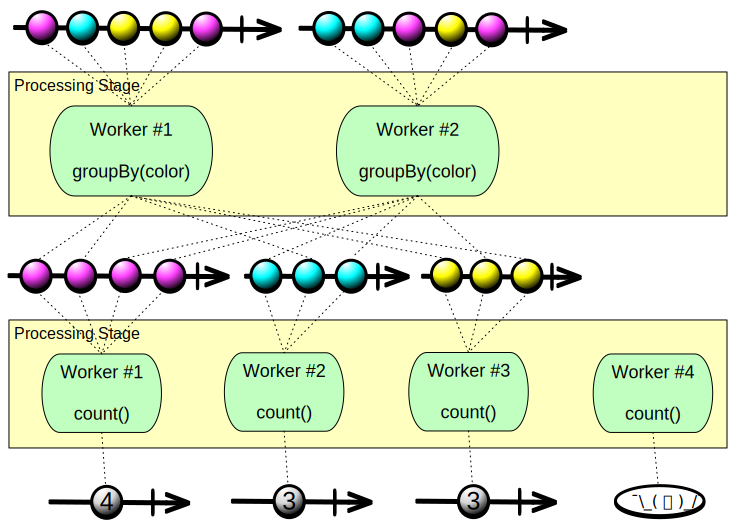

Autoscaling in Mantis¶
Being a cloud-native platform Mantis supports autoscaling out-of-the-box. Both the agent cluster and the Mantis Jobs can be configured to autoscale.
You can define a policy for your Jobs in which they autoscale their resources based on the dynamic needs resulting from variation in the input data they process.
This provides two benefits:
- You can define Jobs to process data without provisioning for peak usage all the time.
- Mantis uses cluster resources optimally without leaving resources idle.
Horizontal Scaling¶
Your Mantis Jobs are composed of in part of Processing Stages, with each stage responsible for a different stream processing task. Because different stages may have different computational needs, each stage has its own autoscaling policy.
A Processing Stage is further subdivided into workers. A worker is the smallest unit of work that is scheduled. Each worker requests a certain number of CPUs, some amount of memory, and a certain amount of network bandwidth.
When a Processing Stage scales, the number of workers in that stage increases or decreases (the resources that Mantis allocates to an individual worker in the stage do not change as a result of scaling).
Scaling a Processing Stage Manually¶
You may define a Processing Stage as scalable without defining an autoscaling policy for it. In such a case the stage is considered manually scalable and you can scale it by means of the Mantis UI or the Mantis API.
Setting an Autoscaling Policy¶
Warning
You should take care that your autoscaling strategies do not contradict each other. For example, if you set a CPU-based strategy and a network-based strategy, one may want to trigger a scale-up and the other a scale-down at the same time.
You define the autoscaling policy for a Processing Stage by setting the following parameters:
- Min and Max number of workers — This sets how many workers Mantis will guarantee to be working within the Processing Stage at any particular time.
- Increment and decrement values — This indicates how many workers are added to or removed from a stage each time the stage autoscales up or down.
- Cooldown seconds — This indicates how many seconds to wait after a scaling operation has been completed before beginning another scaling operation.
- Stragtegies — An autoscaling policy has the following strategy parameters:
- Type — CPU, memory, network, or data drop
- Scale down below percentage — When the average value for all workers falls below this value, the stage will scale down. This value is calculated as actual usage divided by requested amounts (for data drop, as the number of data items dropped divided by the total number of data items, dropped+processed).
- Scale up above percentage — When the average value for all workers rises above this value, the stage will scale up.
- Rolling count — This value helps to keep jitter out of the autoscaling process. Instead of scaling immediately the first time values fall outside of the scale-down and scale-up percentage thresholds you define, Mantis will wait until the thresholds are exceeded a certain number of times within a certain window. For example, a rolling count of “6 of 10” means that only if in ten consecutive observations six or more of the observations fall below the scale-down threshold will the stage be scaled down.
Note
Ideally, there should be zero data drop, so there isn’t an elegant way to express “scale down below percentage” for data drop. Specifying “0%” as the “scale down below percentage” effectively means the data drop percentage never trigger a scale down. For this reason, it is best to use the data drop strategy in conjunction with another strategy that provides the scale-down trigger.
The following example shows how you might establish the autoscaling policy for a stage in the Mantis UI:

The illustration above shows a stage with an autoscaling policy that specifies a minimum of 5 and a maximum of 20 workers. It uses a single strategy, that of network bandwidth usage.
Autoscaling Scenarios¶
There are four varieties of autoscaling scenarios that you should consider for your Mantis Job:
-
The Processing Stage connects to a cold Source, such as a Kafka topic.
Autoscaling works well for this type of stage (the initial stage in a Job that connects to the Source). For example, if your stage connects to a Kafka source, a change in the number of workers in the first stage of your Mantis Job causes the Kafka client to redistribute the partitions of the topic among the new number of workers.
-
The Processing Stage connects to a hot source, such as a working server.
The Source stage (stage #1) will have to re-partition the Source servers after an autoscale event on the Processing Stage. This is mainly a concern for Source Jobs. Upon receipt of a modified number of workers, each worker re-partitions the current servers into its own index of the new total. This results in a new list of servers to connect to (for both scale up and scale down), some of which may be already connected. Making a new connection to a Source server evicts any old existing connection from the same Job. This guarantees that no duplicate messages are sent to a Mantis Job. (The solution for this scenario is currently in development.)
Rewrite this; it’s not very clear.
-
The Processing Stage connects to another Mantis Job.
In this case, the initial Processing Stage in a Job that connects to the output of the previous Mantis Job has strong connectivity into the Source Job via the use of Mantis Java client. In suc a case, all workers from this Processing Stage connect to all workers of the source Job’s Sink. Therefore, autoscaling this type of Job works well.
-
The Processing Stage connects to a previous Processing Stage in the same Mantis Job.
Each Processing Stage is strongly connected to its previous Processing Stage. Therefore, autoscaling of this type typically works well. However, a Processing Stage following a grouped stage (a Processing Stage that does a
group byoperation) receives a grouped Observable orMantisGroup. When Mantis scales such a grouped stage, these groups are repartitioned on to the new number of workers. The Processing Stage following such a grouped stage must, therefore, be prepared to potentially receive a different set of groups after a rescale operation.How does a subsequent stage learn that the previous stage has autoscaled?
Note that the number of groups resulting from a
group byoperation is the maximum limit on the number of workers that can be expected to work on such groups (unless a subsequent processing stage subdivides those groups). In the following illustrations, a processing stage that does agroup byoperation groups the incoming data into three groups, each one of which is handled by a single worker in the subsequent processing stage. When that second stage scales up and adds another worker, that worker remains idle and does not assist in processing data because there are not enough groups to distribute among the larger number of workers.Before autoscaling: 
After autoscaling: 
Updating Autoscalable Jobs¶
To upload a Mantis Job when you have new code to push, upload the .jar or .zip artifact file
to Mantis, and make any necessary adjustments to its behavior and policies by using the Mantis UI.
You can also do this in two ways via the Mantis API:
- Update the Job Cluster with a new version for its artifact file along with new scheduling information. This updated JAR and scheduling info are available to use with the next Job submission. However, currently-running Jobs continue to run with whatever artifact file they were started with.
- Quick update the Job Cluster with only a new artifact file version and submit a new Job with it. The new Job is submitted by using the scheduling info from the last Job submitted.
The latter of the above two is convenient not only because you provide the minimal information needed to update the Job. But, also, because when it picks up the scheduling info from the last Job submitted, if it is running, the new Job is started with the same number of workers as the last one. That is, if it had scaled up, the new Job starts scaled up as well.